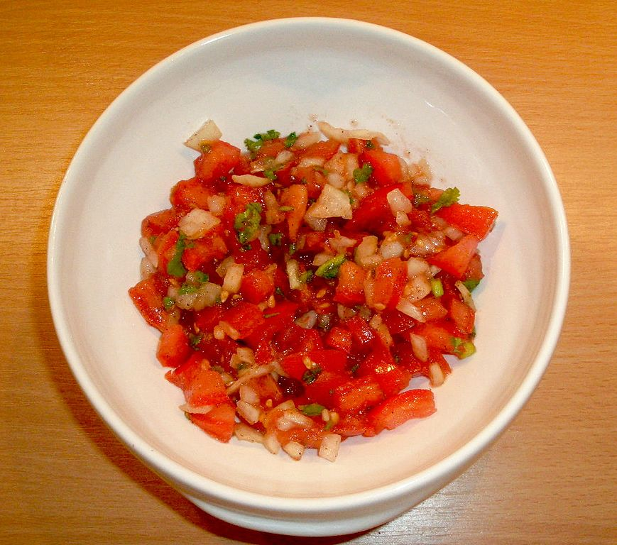

Salsa

Description:
Salsa made with fresh vegetables to dip your chips in.
Adapted from Leanne Brown's "Good and Cheap"
Ingredients
- 2 cups of chopped tomatoes
- 1/2 medium onion, finely diced
- 1 jalapeno pepper, finely diced
- 1 lime, juiced
- 1/4 fresh cilantro, finely chopped
- Salt and pepper
Optional additions
- mango, peach, plu, or pineapple
- Beans
- Corn
- Garlic
Instructions
- If you don't want raw onions, saute the onions in a pan with a bit of water over medium heat until the water has boiled off.
- You can substitute cilantro with another herb if you want to.
- Mix the ingredients into a bowl. Add salt and pepper as needed.
- Taste the salsa to your liking. The salsa consists of spiciness from the peppers, sweetness from the tomatoes, and freshness from the herbs and lime.
- Add the appropriate ingridients as needed if you want more of a certain flavour.
- When storing, make sure the container is air tight. Make sure to eat as soon as possible since it won't last as long as store bought salsa.